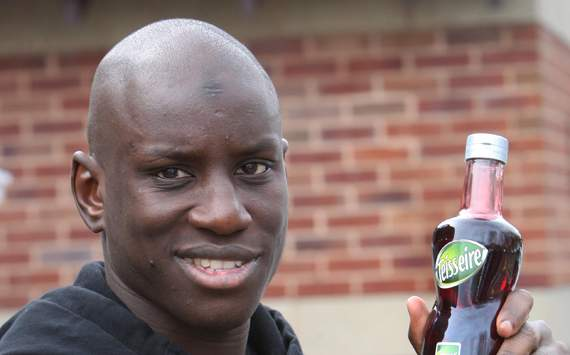
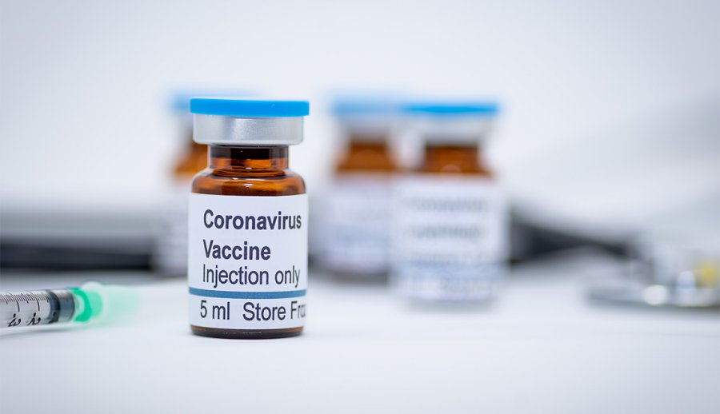

Latest News
Demba and his syrup.
All syrups questions answered.
In an interview, footballer Demba Ba answers many questions, including a perculiar one about his love for syrup! The video is below. Demba Ba is a Senegalese striker who is currently a free agent after leaving Turkish club Basaksehir. He spent some of his career in England playing for giants Chelea, West Ham and Newcastle. While being Senegalese, he was born in France in 1985 making him 35 years old. He has won the Turkish Super Lig on two occasions.
Watch the video:
Election madness!

Trump goes to twitter, "STOP THE COUNT!"
Fraudulent votes? Thats what ex-president Donald Trump believes. Hes ready with a full lawsuit to investiage whether he has been robbed. Many people believe this is just him "throwing a tauntrum" as he cannot contain the fact that he has lost. There is more to come from this piece of news.
Watch the video:
Is the vaccine safe?
Can we trust it?
Will the vaccine turn you into a govournment robot? Probably not. These hoax's are driving people away from taking the vaccine that will help contain the corona virus so that we can go back to our regular lives. So can we trust it? Scientists say yes! While you may not have access to it immediately, other will and that is the first step.